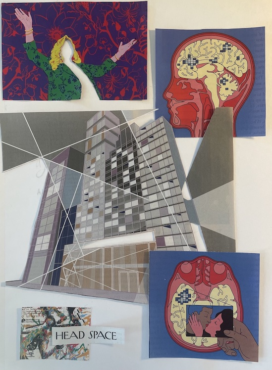

The first I heard the word "flow" in reference to work, was not from a coder, but rather from an art teacher. The benefit of being a perfectionist (read: slow) in art class, was that I spent a lot of time after class in the art room absorbing conversations of the older kids with our teacher. She described flow in drawing as having pushed past the point of self-judgement. The only thing that exists in your mind is your subject and the need to put it on paper.
During that time, we were covering figure drawing in class. I began obsessively listening to the same set of songs, use the same pencil, pull my hair back in the same way each time I sat down to draw. Eventually I hit my stride and was able to dip in and out of flow. Since then, I’ve strived for my flow state whether I’m coding, reading or drawing.
This morning I opted for a figure drawing exercise and listened to a 7 year old playlist in an attempt to recapture that first feeling of flow. I will continue to work toward that utter lack of self-judgement.
2021.11.29
Above is a one-line drawing exercise depicting different items on my desk: the base of a lamp, a stack of books, and my sewing machine.
Today I also put some more touches on a color pencil jellyfish drawing that I began over the summer. My goal was to emphasize the fishbowl, as round pieces of glass are extremely challenging to communicate well. It's a work in progress...
2021.12.01
This morning while on our weekly update call, I mentioned to Scott that I was planning to make a drawing of a jellyfish inside of a lava lamp rather than a fishbowl (above). This sparked Scott's imagination and he suggested that I create a lava lamp simulation to use as a form of data visualization. Inspired by this conversation, I created the below lava lamp simulation in Processing as my daily sketch.
The simulation is a prototype for something a bit more sophisticated. Currently, the sketch consists of 4 "leader" and 8 "follower" ellipses traveling through a vector field. The vector field is re-generated every so often so that the ellipses don't fall into a pattern. The "followers" also change leaders every so often to simulate the bits of lava that break off of larger pieces in an actual lava lamp.
Some ideas for improving the sketch are to dive into the pixel-level to create more organic-looking shapes around the ellipses, while still using the ellipses as the drivers of movement. I also would consider transitioning into WebGL 3D to add lighting and the z-dimension. I could potentially capture the bottom-lighting and glow of a lava lamp.
If worked into a higher-quality version, the lava lamp could be used as a data visualization tool. Though I'm unsure of how I would make that happen yet, I'd love to explore the idea of a multi-colored lava lamp. Traditionally this effect is created by adding different colored lighting at the top and bottom of the lamp. However, because this is a simulation, it may be interesting to explore this theme without the inherent limitations of physical matter.
2021.12.02
These two figure drawings are an excerpt from a 30 minute gesture drawing exercise through Line of Action. In the exercise, you are given 7 reference images, with 30 seconds to complete each. Then you are given 5 more images with a minute to complete each. Finally, you are given 2 images with 5 minutes each. The above are the 5 minute drawings.
Though I’ve completed the exercise several times throughout the week, my drawings haven’t improved much. However, I’m slowly getting more comfortable with a pencil again.

Since getting a puppy, my New Yorker subscription has been neglected. In an attempt to somehow utilize the magazines stacked in my mail box, I cut out some images to add to my growing collection of collage materials. I also got some use out of a new X-Acto knife to make some interesting cut outs. These will eventually go to a good cause...when inspiration strikes.
While having cheap sushi for lunch the other day, I caught some snippets of the PBS sewing channel. The most intriguing concept caught my eye: modern quilting. Immediately my mind was racing. Like most everyone else my age, my apartment is done up in “modern” fashion and my wardrobe is ever approaching “minimalism”. Even my tattoos are simple line drawings. Who would be better to approach such a twist on an old craft.
**I hope my slight sarcasm and hint of self-deprecation are coming across here**
But seriously, I can sew. I can put color blocks together in a way that looks artsy and sleek. Can I get a computer to do that in such a way that communicates the results of a data analysis? I have confidence that I can.
Next steps include figuring out how using machine learning to create images actually works. If I can figure that out, I will generate several quilt patterns. Because creating a quilt can be extremely time-consuming I could buy the material and make a few. Then, I could display the unused patterns as part of the “exhibit”.
The idea plays a bit on the idea of female artists taking back stereotypically female crafts such as cross-stitch or crochet. Ah the possible levels of irony and metaphor.
2021.12.03
Today's sketch is an expriment I created in P5.js based on the Chaikin Curve Algorithm, which smooths a curve by iteratively replacing every point by two new points: one 1/4 of the way to the next point and one 1/4 of the way to the previous point. I replaced this 1/4 ratio with 0.1 and showed each step of the iterative algorithm. When clicked, the points of the original line are regenerated, resulting in a new image each time.
UPDATE: After walking away from the former sketch for several hours, I realized that the results, though visually appealing, didn't make much sense. I realized that I forgot to include about half of the algorithm. These results make much more sense along the lines of the formerly explained Chaikin Algorithm. One can clearly see a much smoother curve result (red). I maintain, however, that the prerveious sketch was a happy little accident whose concepts I'll likely use later.
2021.12.08
Above is a composition in which each quadrant is created by harnessing random number generation in a different way. The first uses the normal distribution to generate points along the y axis and uniform distribution along the x. The second uses the uniform distribution to generate points in the top and bottom halves of the canvas. Then, these points are randomly matched up and a line is drawn between the two. The third is simply points generated by the uniform distribution. The final quadrant is created by generating points using the normal distribution in both the x and y direction.
Note that clicking on each of the quadrants re-generates the points resulting in a slightly new composition.
I’m also currently looking into harnessing the ml5 library along with Magenta's Sketch-RNN for quilt generation. It seems that the most difficult part (of course) will be formatting a training set.
2021.12.09
My favorite part of lava lamp physics is the moment when a small piece of “lava” breaks off of a larger piece. There’s a stretching effect, as well as some recoil. I am working to implement this event into my lava lamp. Above, when a smaller piece of the lava breaks off, you will see a set of white triangles. The points from these triangles will eventually be used to form a curve that will connect the pieces, then break off.
2021.12.10
Gone skiing...
2021.12.13
In ancient Egypt, it was believed that a deceased person would be asked by the Goddess Maat to place their heart on a scale opposite a feather. If their heart weighted less than the feather, they would be allowed to ascend to the Field of Reeds, a paradise with no sickness, disappointment, or death.
This sketch represents this beautiful metaphor and is done in preparation of a larger, more finished piece. I will likely complete it in colored pencil. I am still brainstorming ways to balance the piece visually, as the left-hand side is much busier.
2021.12.14
I'm currently working to evolve from triangles to curves. I'm working with the p5.js function curve in which you give two points to a curve along with two control points. However, the control points don't seem to work the way I expect.
I've also noticed a few bugs, including a follower ellipse jumping location when it hits a wall.
2021.12.15
Today's "sketch" is an update on my progress on the Egyptian scale detailed on 2021.12.13. It is completed in color pencil and I ultimately made no changes to the original sketch to attempt to balance it. I felt the lack of balance may better represent the metaphor.
Because it would be extremely boring to read someone's self-criticism, I'm instead not going to comment further on the piece and simply remind myself that art is always a process. As is re-learning old skills.
2021.12.16
Today I experimented with an online tool that generates a color gradient given two colors. I also created a quick python script that takes the colors in the format that the website gives and spits it out in a format that is usable in p5 js.
2021.12.17
The slides above are iterations of the title page I'm creating for an online art journal that my friends and I are putting together. Ultimately it will be a full-page piece.